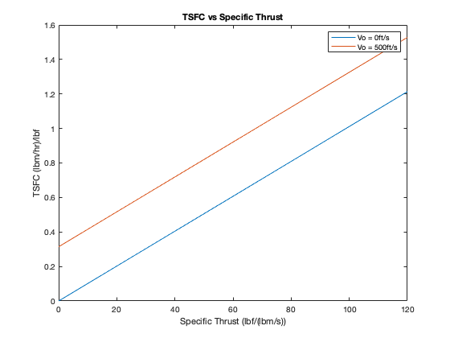

%part c of 1.2 HW #1 %givens Vo1 = 0; %freestream velocity Vo2 = 500; %ft/s n_th = 0.4; %thermal efficiency h_pr = 18400; %stored chemical energy of fuel, BTU/lbm gc = 32.174; %convert h_pr h_pr = 18400*778; %ft*lbm/lbf spec_thrust = 0:1:120; %lbf/(lbm/s) TSFC_1 = 3600*((gc*spec_thrust) + (2*Vo1))/(2*n_th*h_pr);%with first freestream TSFC_2 = 3600*((gc*spec_thrust) + (2*Vo2))/(2*n_th*h_pr);%with first freestream figure(1) plot(spec_thrust, TSFC_1); hold on plot(spec_thrust, TSFC_2); legend("Vo = 0ft/s", "Vo = 500ft/s"); xlabel("Specific Thrust (lbf/(lbm/s))"); ylabel("TSFC (lbm/hr)/lbf"); title("TSFC vs Specific Thrust");